4 Data Visualisation
Visualising well log data is a fundamental part of working with subsurface measurements. Whether we are building traditional log plots, exploring data distributions, or identifying missing values, Python provides a powerful and flexible toolkit for creating informative graphics.
In this chapter, we will cover the core visualisation techniques used with well log data, starting with building log plots from scratch using matplotlib and then moving into exploratory data analysis techniques.
4.1 Basic Well Log Plots with Matplotlib
Well log plots are one of the most common visualisation tools in geoscience and petrophysics. They display logging measurements on the x-axis and measured depth on the y-axis, allowing us to see how properties change along the length of a wellbore. Matplotlib is a highly flexible Python library that is well suited to building these plots from scratch.
4.1.1 Setting up the Libraries and Loading Data
To get started, we need to import our core libraries: lasio to load LAS files, pandas for working with dataframes, and matplotlib for visualisation.
import pandas as pd
import lasio
import matplotlib.pyplot as pltWe then load the LAS file and convert it to a pandas dataframe. By resetting the index, we move the depth curve from the dataframe index into a regular column, which makes it easier to work with.
las = lasio.read("Data/15-9-19_SR_COMP.LAS")
df = las.df()
df.reset_index(inplace=True)We can verify the data has loaded correctly by calling df.head(), which returns the first five rows of the dataframe.
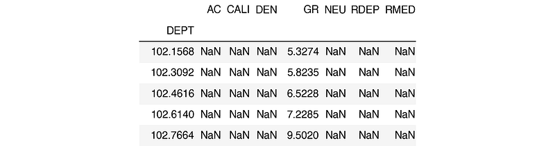
The columns in this file include:
- AC for acoustic compressional slowness
- CALI for borehole caliper
- DEN for bulk density
- GR for gamma ray
- NEU for neutron porosity
- RDEP for deep resistivity
- RMED for medium resistivity
4.1.2 Creating a Simple Line Plot
The quickest way to produce a plot is by calling df.plot() and passing in two column names:
df.plot('GR', 'DEPTH')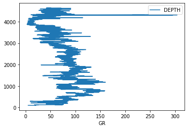
This produces a very basic plot. The depth axis is the wrong way up, and there is no control over the scale. To build something closer to a traditional log plot, we need to use matplotlib’s subplot system directly.
4.1.3 Building a Single Track Log Plot
There are many ways to generate subplots in matplotlib. For well log plots, subplot2grid provides fine control over track widths and positioning.
fig = plt.subplots(figsize=(10,10))
#Set up the plot axis
ax1 = plt.subplot2grid((1,1), (0,0), rowspan=1, colspan = 1)
ax1.plot("GR", "DEPTH", data = df, color = "green")
ax1.set_xlabel("Gamma")
ax1.set_xlim(0, 200)
ax1.set_ylim(4700, 3500)
ax1.grid()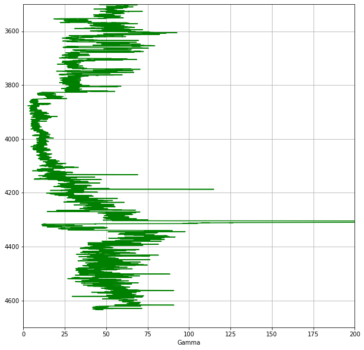
In this code, we define a figure and create an axis using plt.subplot2grid(). The shape argument (1,1) sets the grid to 1 row by 1 column. We then plot the Gamma Ray curve against depth, set the axis limits (note the y-axis is inverted so that depth increases downwards), and display a grid.
4.1.4 Adding Multiple Tracks
To add more tracks, we extend the subplot grid and create additional axes:
fig = plt.subplots(figsize=(10,10))
#Set up the plot axes
ax1 = plt.subplot2grid((1,3), (0,0), rowspan=1, colspan = 1)
ax2 = plt.subplot2grid((1,3), (0,1), rowspan=1, colspan = 1)
ax3 = plt.subplot2grid((1,3), (0,2), rowspan=1, colspan = 1)
ax1.plot("GR", "DEPTH", data = df, color = "green")
ax1.set_xlim(0, 200)
ax2.plot("RDEP", "DEPTH", data = df, color = "red")
ax2.set_xlim(0.2, 2000)
ax2.semilogx()
ax3.plot("DEN", "DEPTH", data = df, color = "red")
ax3.set_xlim(1.95, 2.95)
for i, ax in enumerate(fig.axes):
ax.set_ylim(4700, 3500)
ax.grid()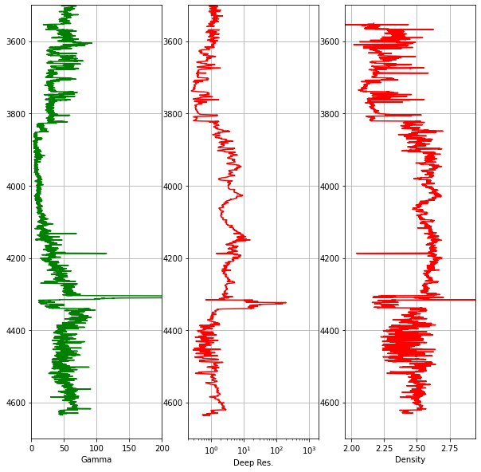
Notice that we use ax2.semilogx() to display the resistivity track on a logarithmic scale, which is standard practice in petrophysics. Common elements like the depth range and grid are set in a single for loop rather than being repeated for each axis.
4.1.5 Reducing Gaps Between Tracks
To make the plot look more like a traditional log plot, we can hide the depth labels on the inner tracks and reduce the spacing between subplots:
#Hide tick labels on the y-axis
for ax in [ax2, ax3]:
plt.setp(ax.get_yticklabels(), visible = False)
#Reduce the space between each subplot
fig.subplots_adjust(wspace = 0.05)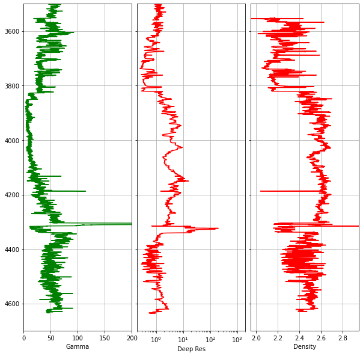
4.1.6 Adding a Secondary Axis for Neutron Porosity
It is standard practice to plot bulk density and neutron porosity on the same track, as the interaction between these two curves helps identify lithology variations and hydrocarbon presence. Since these measurements have different units and scales, we use twiny() to create a second x-axis that shares the same y-axis (depth):
fig, axes = plt.subplots(figsize=(10,10))
curve_names = ['Gamma', 'Deep Res', 'Density', 'Neutron']
ax1 = plt.subplot2grid((1,3), (0,0), rowspan=1, colspan = 1)
ax2 = plt.subplot2grid((1,3), (0,1), rowspan=1, colspan = 1)
ax3 = plt.subplot2grid((1,3), (0,2), rowspan=1, colspan = 1)
ax4 = ax3.twiny()
ax1.plot("GR", "DEPTH", data = df, color = "green", lw = 0.5)
ax1.set_xlim(0, 200)
ax2.plot("RDEP", "DEPTH", data = df, color = "red", lw = 0.5)
ax2.set_xlim(0.2, 2000)
ax2.semilogx()
ax3.plot("DEN", "DEPTH", data = df, color = "red", lw = 0.5)
ax3.set_xlim(1.95, 2.95)
ax4.plot("NEU", "DEPTH", data = df, color = "blue", lw = 0.5)
ax4.set_xlim(45, -15)
for i, ax in enumerate(fig.axes):
ax.set_ylim(4700, 3500)
ax.xaxis.set_ticks_position("top")
ax.xaxis.set_label_position("top")
ax.set_xlabel(curve_names[i])
if i == 3:
ax.spines["top"].set_position(("axes", 1.08))
else:
ax.grid()
for ax in [ax2, ax3]:
plt.setp(ax.get_yticklabels(), visible = False)
fig.subplots_adjust(wspace = 0.05)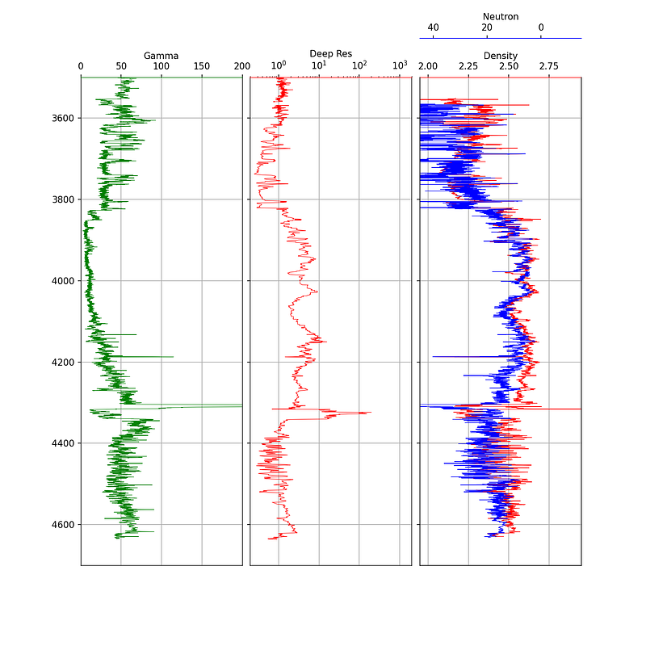
The neutron porosity scale is conventionally reversed (45 to -15) so that it overlaps with the density curve in a meaningful way. The spines["top"].set_position(("axes", 1.08)) call offsets the neutron label so it sits above the density label.
4.1.7 Enhancing Plots with Color Fills
Color fills can significantly improve the readability of well log plots by highlighting areas of interest. Matplotlib’s fill_betweenx() function is the key tool for this.
4.1.7.1 Simple Color Fill
A simple fill extends from the curve to the edge of the track. We pass the depth, the curve values, and the value to fill towards:
ax1.fill_betweenx(df['DEPTH'], df['GR'], 0, facecolor='gold')
ax1.fill_betweenx(df['DEPTH'], df['GR'], 150, facecolor='green')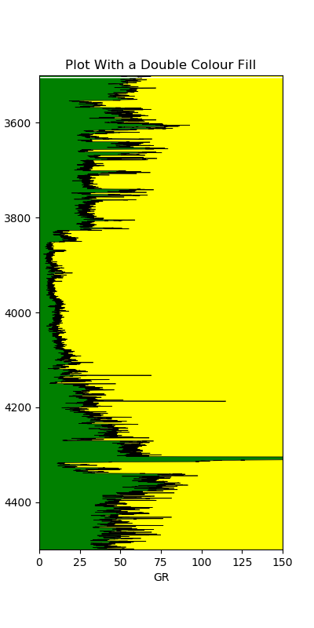
This allows us to quickly distinguish shalier intervals (higher gamma ray, green fill) from cleaner intervals (lower gamma ray, gold fill).
4.1.7.2 Variable Color Fill
We can take this further by applying a gradient fill that changes color based on the curve value. This involves creating a color index from a colormap and looping through each value:
left_col_value = 0
right_col_value = 150
span = abs(left_col_value - right_col_value)
cmap = plt.get_cmap('nipy_spectral')
color_index = np.arange(left_col_value, right_col_value, span / 100)
for index in sorted(color_index):
index_value = (index - left_col_value) / span
color = cmap(index_value)
ax1.fill_betweenx(df['DEPTH'], df['GR'], right_col_value,
where=df['GR'] >= index, color=color)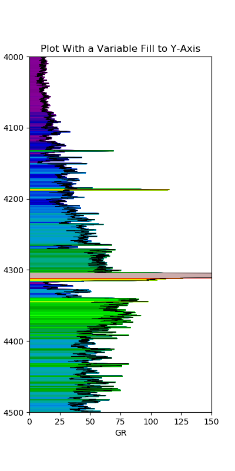
The variable fill makes it much easier to visually identify areas of similar values based on color.
4.1.7.3 Density-Neutron Crossover Fill
The crossover between density and neutron porosity curves is a classic petrophysical indicator. When density moves to the left of neutron porosity, it may indicate a porous reservoir rock. When the crossover occurs the opposite way, it may indicate shale.
Applying this fill is more complex because the two curves have different scales. The neutron porosity needs to be rescaled to match the density units before the fill can be applied:
x1 = df['RHOB']
x2 = df['NPHI']
x = np.array(ax1.get_xlim())
z = np.array(ax2.get_xlim())
nz = ((x2 - np.max(z)) / (np.min(z) - np.max(z))) * \
(np.max(x) - np.min(x)) + np.min(x)
ax1.fill_betweenx(df['DEPTH'], x1, nz, where=x1 >= nz,
interpolate=True, color='green')
ax1.fill_betweenx(df['DEPTH'], x1, nz, where=x1 <= nz,
interpolate=True, color='yellow')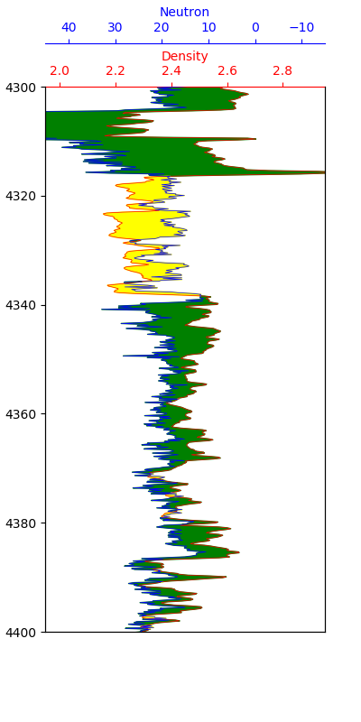
The green shading indicates potential reservoir sections, while the yellow shading indicates potential shale sections. This is a simplified interpretation and should always be confirmed by examining other logging curves.
4.1.8 Displaying Lithology Data on a Log Plot
Adding lithology information to a well log plot enhances how we relate electrical logging measurements to the geology. Lithology data may come from a mineralogical interpretation or from mud logs.
The approach uses a nested dictionary to store the lithology properties (color and hatch pattern) and fill_betweenx() to apply them as a variable fill on a dedicated track.
First, we define a dictionary mapping lithology codes to display properties:
lithology_numbers = {30000: {'lith':'Sandstone', 'lith_num':1,
'hatch': '..', 'color':'#ffff00'},
65030: {'lith':'Sandstone/Shale', 'lith_num':2,
'hatch':'-.', 'color':'#ffe119'},
65000: {'lith':'Shale', 'lith_num':3,
'hatch':'--', 'color':'#bebebe'},
# ... additional lithologies
}The colors are based on the Kansas Geological Survey lithology chart. The key piece of code for the variable fill loops through each lithology in the dictionary and applies the appropriate color and hatching:
for key in lithology_numbers.keys():
color = lithology_numbers[key]['color']
hatch = lithology_numbers[key]['hatch']
ax.fill_betweenx(df['DEPTH'], 0, 1,
where=(df['LITHOLOGY'] == key),
facecolor=color, hatch=hatch)This creates a lithology track alongside the standard log curves, allowing geoscientists to see how the log responses relate to the geological formations.
4.1.9 Adding Formation Data to a Log Plot
Building on the formation data integration covered in the previous chapter, we can add formation boundaries and labels directly onto a log plot. This involves loading formation top and bottom depths, creating colored spans across all tracks, and adding text labels.
The key elements are:
- Using
ax.axhspan()to shade formation intervals across all tracks - Calculating formation midpoints for label placement
- Using
ax.text()to place formation names on a dedicated track
for ax in [ax1, ax2, ax3, ax5]:
for depth, colour in zip(formations.values(), colours):
ax.axhspan(depth[0], depth[1], color=colour, alpha=0.1)
for label, formation_mid in zip(formations_dict.keys(),
formation_midpoints):
ax5.text(0.5, formation_mid, label, rotation=90,
verticalalignment='center', fontweight='bold',
fontsize='large')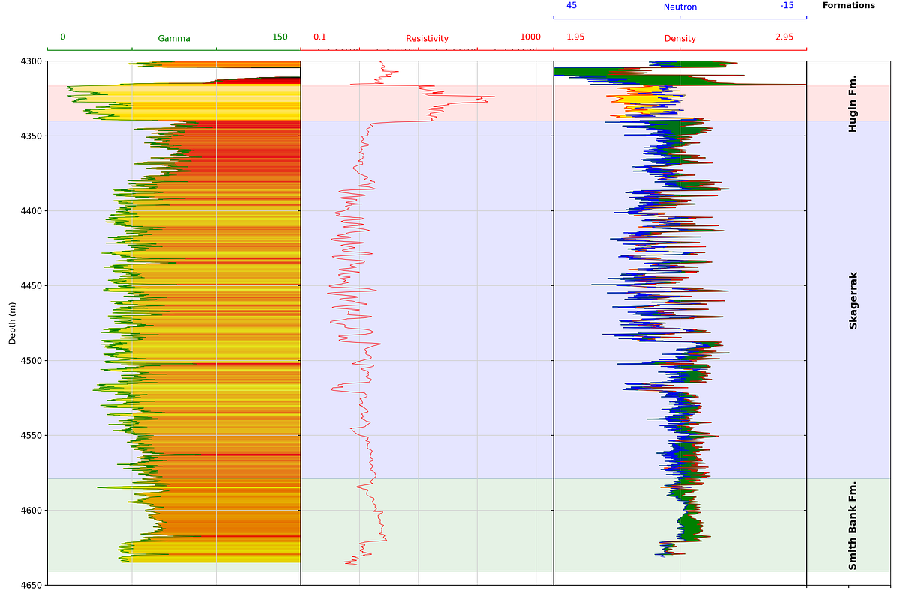
Wrapping the plot code in a function makes it reusable across different wells, provided the curve names are consistent.
4.1.10 Displaying LWD Image Logs
Borehole image logs are false-color pseudo images of the borehole wall generated from different logging measurements. In the Logging While Drilling (LWD) environment, measurements are made from sensors built into tools that form part of the drillstring, and using the tool rotation, provide full 360-degree coverage. The data is split into sectors and delivered as individual columns in a LAS file.
To display image data, we use matplotlib’s imshow() function. The image data is stored in a dataframe where each column represents a sector:
fig = plt.figure(figsize=(7,15))
miny = azidendf.index.min()
maxy = azidendf.index.max()
im = plt.imshow(azidendf, interpolation='bilinear',
aspect='auto', extent=[0, azidendf.shape[1],
maxy, miny], cmap='YlOrRd', vmin=1.95, vmax=2.95)
plt.colorbar(im, label='Bulk Density (g/cc)')
plt.xlabel('Sector')
plt.ylabel('Depth (m)')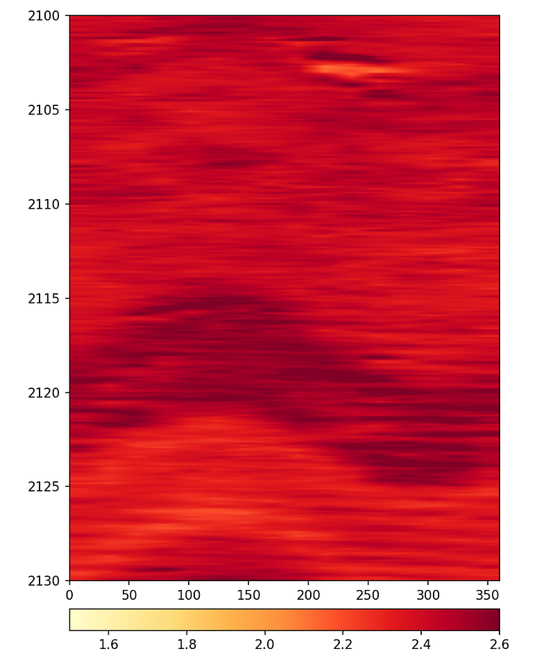
The interpolation parameter controls how smooth the image appears. Without interpolation, the individual sectors are visible as blocks. Using bilinear or lanczos interpolation produces smoother images that are easier to interpret.
For the final display, both the azimuthal density and azimuthal gamma ray images can be placed side by side with survey data using subplots:
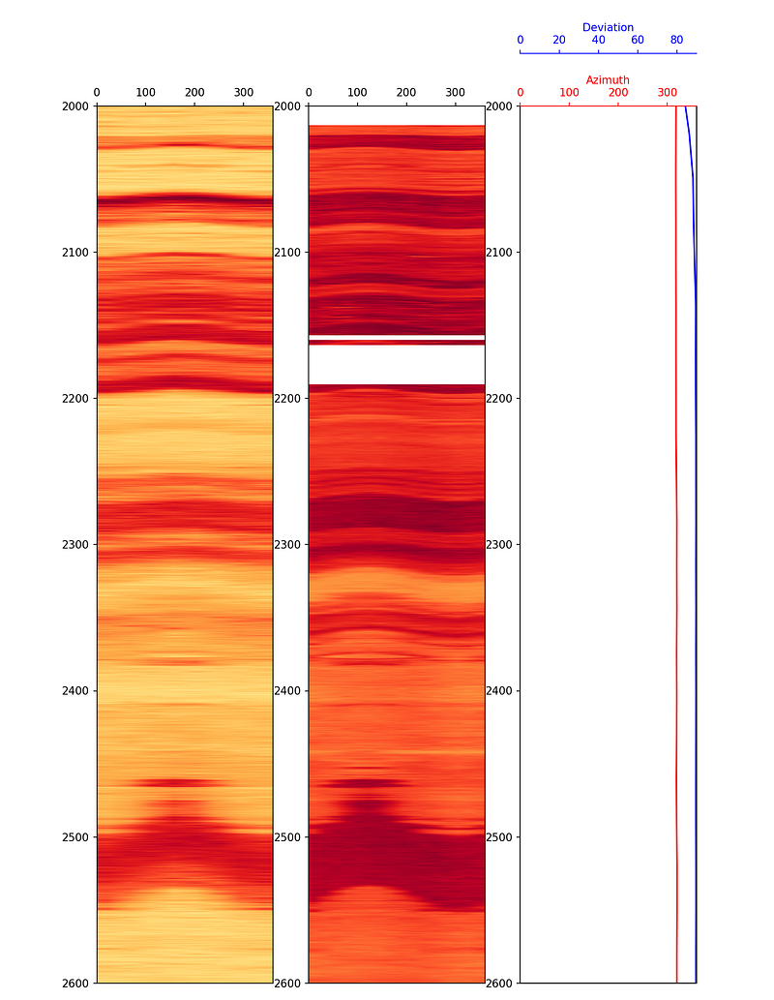
The lower resolution of the azimuthal gamma ray image compared to the density image is a consequence of the fewer sectors being recorded by the gamma ray tool.
4.2 Histograms
Histograms are an excellent tool for understanding the distribution of values within a logging curve. They can help identify outliers and pick key interpretation parameters such as shale and clean end points for clay volume calculations.
4.2.1 Creating a Basic Histogram
Using matplotlib, a basic histogram can be created with just a few lines:
plt.hist(df['GR'], bins=30, color='red', alpha=0.5, edgecolor='black')
plt.xlabel('Gamma Ray - API', fontsize=14)
plt.ylabel('Frequency', fontsize=14)
plt.xlim(0, 200)
plt.show()The bins parameter controls how many intervals the data range is divided into. More bins provide finer detail, while fewer bins give a broader picture.
4.2.2 Adding a Kernel Density Estimate
We can overlay a kernel density estimation (KDE) line on the histogram to show the smooth distribution:
df['GR'].plot(kind='hist', bins=30, color='red', alpha=0.5,
density=True, edgecolor='black')
df['GR'].plot(kind='kde', color='black')
plt.xlabel('Gamma Ray - API', fontsize=14)
plt.ylabel('Density', fontsize=14)
plt.xlim(0, 200)
plt.show()4.2.3 Adding Percentile Lines
When calculating clay or shale volumes, we often use percentile values rather than absolute min/max to reduce the influence of outliers. These can be calculated using built-in pandas functions and added to the plot:
mean = df['GR'].mean()
p5 = df['GR'].quantile(0.05)
p95 = df['GR'].quantile(0.95)
df['GR'].plot(kind='hist', bins=30, color='red', alpha=0.5,
edgecolor='black')
plt.xlabel('Gamma Ray', fontsize=14)
plt.ylabel('Frequency', fontsize=14)
plt.xlim(0, 200)
plt.axvline(mean, color='blue', label='mean')
plt.axvline(p5, color='green', label='5th Percentile')
plt.axvline(p95, color='purple', label='95th Percentile')
plt.legend()
plt.show()The 5th and 95th percentiles provide the clean sand and shale end points respectively, which are commonly used in petrophysical workflows.
4.3 Boxplots
Boxplots are a compact statistical tool for visualising the distribution of logging measurements. They provide a quick summary of the data’s range and spread, and are particularly effective at highlighting outliers. A boxplot is built from five key numbers:
- The minimum (Q1 − 1.5 × IQR)
- The 25th percentile (Q1)
- The median (50th percentile)
- The 75th percentile (Q3)
- The maximum (Q3 + 1.5 × IQR)
Any data points that fall outside the whisker limits are plotted individually as outliers. This makes boxplots a useful complement to histograms when assessing data quality.
4.3.1 Creating a Basic Boxplot
Seaborn provides a straightforward boxplot() function. We import seaborn and pandas, load our data, and pass in the column of interest:
import seaborn as sns
import pandas as pd
df = pd.read_csv('Data/Xeek_train_subset_clean.csv')
sns.boxplot(x=df['GR'])
To display the boxplot vertically, swap x for y:
sns.boxplot(y=df['GR'])4.3.2 Splitting by Lithology
Passing both x and y creates a series of boxplots split by a categorical variable, such as lithology:
import matplotlib.pyplot as plt
fig, ax = plt.subplots(1, figsize=(10, 10))
sns.boxplot(y=df['LITH'], x=df['GR'])
plt.xticks(rotation=90)
plt.show()
This immediately shows how gamma ray values vary across lithologies and which rock types contain the most outlying values.
4.3.3 Styling the Boxplot
Seaborn includes five preset styles (darkgrid, whitegrid, dark, white, ticks) that can be applied with sns.set_style(). The whitegrid style works well for well log data as it keeps the background clean:
sns.set_style('whitegrid')
sns.boxplot(y=df['LITH'], x=df['GR'], palette='Blues')
Axis labels and a title can be set by assigning the plot to a variable and calling the appropriate methods:
p = sns.boxplot(y=df['LITH'], x=df['GR'])
p.set_xlabel('Gamma Ray', fontsize=14, fontweight='bold')
p.set_ylabel('Lithology', fontsize=14, fontweight='bold')
p.set_title('Gamma Ray Distribution by Lithology', fontsize=16, fontweight='bold')
4.3.4 Styling the Outliers
The appearance of outlier markers can be customised by passing a flierprops dictionary. This allows control over the marker shape, size, colour, and transparency:
flierprops = dict(marker='o', markersize=5, markeredgecolor='black',
markerfacecolor='green', alpha=0.5)
p = sns.boxplot(y=df['LITH'], x=df['GR'], flierprops=flierprops)
p.set_xlabel('Gamma Ray', fontsize=14, fontweight='bold')
p.set_ylabel('Lithology', fontsize=14, fontweight='bold')
p.set_title('Gamma Ray Distribution by Lithology', fontsize=16, fontweight='bold')
Styling the outliers makes them easier to distinguish from the box-and-whisker components, which is useful when presenting results or preparing publication-quality figures.
4.4 Crossplots and Scatter Plots
Crossplots (scatter plots) are fundamental to petrophysical analysis. They allow us to see relationships between two measurements and identify lithological or fluid-related trends.
4.4.1 Seaborn Relplot
Seaborn’s relplot (relational plot) is a flexible figure-level function for creating scatter and line plots. It uses the same familiar seaborn syntax but makes it easy to colour by continuous or categorical variables and split data into faceted subplots.
To create a basic density-neutron scatter plot, we pass the dataframe and the two column names. Setting ylim on the returned object reverses the density axis, which is the conventional orientation in petrophysics:
import seaborn as sns
import pandas as pd
df = pd.read_csv('Data/Xeek_Well_15-9-15.csv', na_values=-999)
g = sns.relplot(data=df, x='NPHI', y='RHOB')
g.set(ylim=(3, 1.5))
4.4.1.1 Colouring by a Continuous Variable
The hue argument colours each point by the value of a third variable. Using caliper (CALI) gives an immediate visual check of which data points may be affected by borehole washout:
g = sns.relplot(data=df, x='NPHI', y='RHOB', hue='CALI')
g.set(ylim=(3, 1.5))4.4.1.2 Colouring by a Discrete Variable
Setting hue to a categorical column such as lithology colours the points by rock type, and adding style='LITH' also varies the marker shape — useful when the figure will be printed in black and white:
g = sns.relplot(data=df, x='NPHI', y='RHOB', hue='LITH', style='LITH')
g.set(ylim=(3, 1.5))
4.4.1.3 Line Plots
Passing kind='line' switches to a line plot. Combined with height and aspect, this produces a stretched log-style view of a curve against depth:
g = sns.relplot(data=df, x='DEPTH_MD', y='GR', kind='line', height=7, aspect=2)
g.set(ylim=(0, 150))
4.4.1.4 Splitting into Facets
The col argument splits the data into separate subplots by category. Using col_wrap controls how many subplots appear per row, and s sets the marker size:
g = sns.relplot(data=df, x='NPHI', y='RHOB',
hue='LITH', style='LITH',
col='LITH', col_wrap=3,
s=100)
g.set(ylim=(3, 1.5))
This approach produces a compact grid of crossplots without needing to write a manual loop or use FacetGrid directly.
4.4.2 Using Seaborn FacetGrid
Seaborn’s FacetGrid provides an easy way to create multiple crossplots split by a categorical variable like lithology or well name. This requires very little code compared to building the same grid manually with matplotlib.
First, we set up lithology labels from numeric codes:
import seaborn as sns
lithology_numbers = {30000: 'Sandstone',
65030: 'Sandstone/Shale',
65000: 'Shale',
80000: 'Marl',
74000: 'Dolomite',
70000: 'Limestone',
70032: 'Chalk',
88000: 'Halite',
86000: 'Anhydrite',
99000: 'Tuff',
90000: 'Coal',
93000: 'Basement'}
data['LITH'] = data['FORCE_2020_LITHOFACIES_LITHOLOGY'].map(lithology_numbers)Density-Neutron by Lithology
g = sns.FacetGrid(data, col='LITH', col_wrap=4)
g.map(sns.scatterplot, 'NPHI', 'RHOB', alpha=0.5)
g.set(xlim=(-0.15, 1))
g.set(ylim=(3, 1))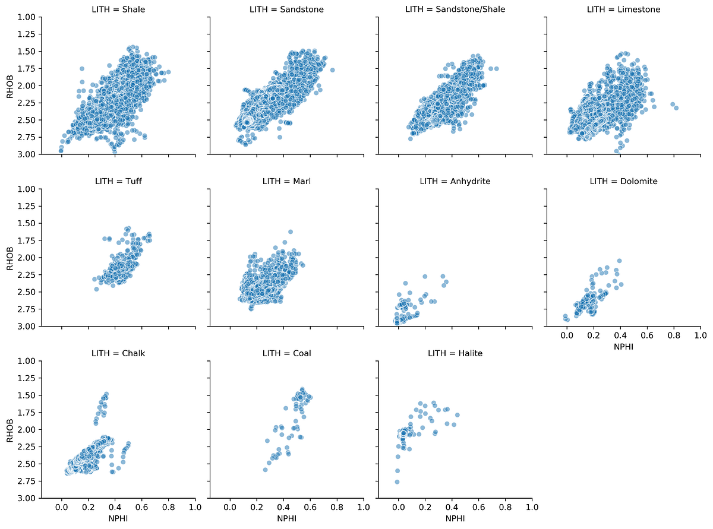
This generates a series of mini crossplots of the density-neutron data, each showing a different lithology. The characteristic response of each rock type becomes immediately apparent.
Density-Neutron by Well with Lithology Coloring
We can add a hue parameter to color the data by lithology within each well’s plot:
g = sns.FacetGrid(data, col='WELL', hue='LITH', col_wrap=4)
g.map(sns.scatterplot, 'NPHI', 'RHOB', linewidth=1, size=0.1, marker='+')
g.set(xlim=(-0.15, 1))
g.set(ylim=(3, 1))
g.add_legend()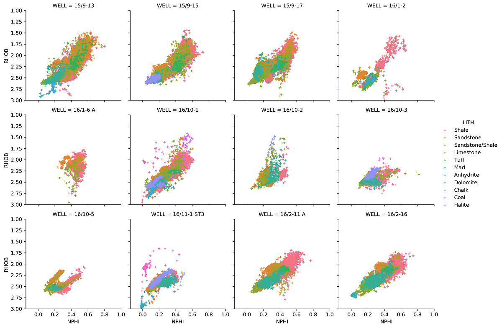
4.4.3 The Seaborn PairPlot
The pair plot is one of seaborn’s most powerful tools for exploratory analysis. With a single line of code, it creates a grid comparing every combination of measurements against each other, with histograms along the diagonal:
key_logs = ['CALI', 'GR', 'NPHI', 'RHOB', 'PEF',
'RDEP', 'RMED', 'DTC', 'DTS']
subset = data[key_logs].dropna()
sns.pairplot(subset, vars=key_logs, diag_kind='hist',
plot_kws={'alpha':0.6, 'edgecolor':'k'})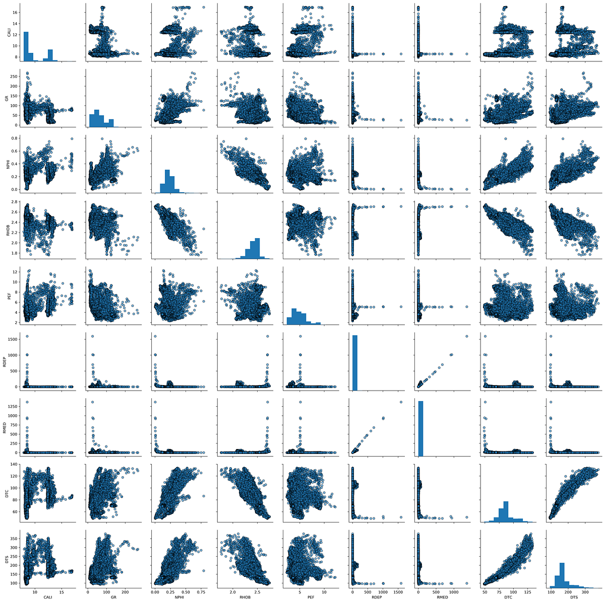
This produces multiple scatter plots showing how each pair of curves relates to each other, with histograms showing the distribution of individual curves along the diagonal. This is a very powerful way to quickly understand the relationships in your data.
4.5 Correlation Heatmap
A correlation heatmap provides a compact matrix view of how strongly every pair of logging curves relates to each other. Each cell shows the Pearson correlation coefficient, which ranges from -1 (perfect negative correlation) to +1 (perfect positive correlation), with values near 0 indicating little or no linear relationship.
4.5.1 Creating the Correlation Matrix
The first step is to compute the correlation matrix using pandas’ .corr() method, then pass it to sns.heatmap():
import pandas as pd
import seaborn as sns
well_data = pd.read_csv('Data/Xeek_Well_15-9-15.csv')
well_data = well_data[['CALI', 'RHOB', 'GR', 'NPHI', 'PEF', 'DTC']]
corr = well_data.corr()
sns.heatmap(corr)
The default colour scheme is not ideal for showing positive and negative correlations. A divergent palette centred on zero is much more informative.
4.5.2 Choosing a Divergent Colour Scheme
Setting cmap='RdBu' maps negative correlations to red and positive correlations to blue. Setting vmin and vmax to -1 and +1 ensures the colour scale is balanced:
sns.heatmap(corr, cmap='RdBu', vmin=-1, vmax=1)
4.5.3 Adding Annotations
Passing annot=True adds the correlation value to each cell, removing the need to cross-reference the colour bar. The annotation font can be controlled with annot_kws:
sns.heatmap(corr, cmap='RdBu', vmin=-1, vmax=1,
annot=True, annot_kws={'fontsize': 11, 'fontweight': 'bold'})
Setting square=True forces each cell to be square, which gives the final heatmap a cleaner, more proportional appearance:
sns.heatmap(corr, cmap='RdBu', vmin=-1, vmax=1,
annot=True, annot_kws={'fontsize': 11, 'fontweight': 'bold'},
square=True)
From the heatmap we can quickly identify which curves are strongly correlated — for example, bulk density and neutron porosity typically show a negative correlation in clean formations — and spot any unexpected relationships that may warrant further investigation.
4.6 Interactive Scatter Plots with Plotly
The visualisations covered so far use matplotlib and seaborn, which produce static images. Plotly generates interactive figures that can be zoomed, panned, and queried by hovering over data points. This is particularly useful when exploring large, multi-well datasets in a Jupyter notebook or web application.
Plotly can be used through two interfaces:
- Plotly Graph Objects — a low-level interface with full control over every element
- Plotly Express — a high-level wrapper that produces common plot types with minimal code
4.6.1 Creating a Basic Scatter Plot
To get started, import plotly.express and pass in the dataframe along with the column names and axis ranges:
import pandas as pd
import plotly.express as px
df = pd.read_csv('xeek_subset_example.csv')
px.scatter(data_frame=df, x='NPHI', y='RHOB',
range_x=[0, 1], range_y=[3, 1], color='LITH')
Because the plot is interactive, individual lithology groups can be toggled on and off by clicking their names in the legend.
4.6.2 Adding Marginal Plots
Marginal plots attach a small supplementary plot to one or both axes of the scatter plot, providing distributional information alongside the crossplot. Plotly Express supports four types via the marginal_x and marginal_y arguments: 'box', 'rug', 'histogram', and 'violin'.
Box plots
px.scatter(data_frame=df, x='NPHI', y='RHOB',
range_x=[0, 1], range_y=[3, 1], color='LITH',
marginal_y='box', marginal_x='box')
Histograms
px.scatter(data_frame=df, x='NPHI', y='RHOB',
range_x=[0, 1], range_y=[3, 1], color='LITH',
marginal_y='histogram', marginal_x='histogram')
Violin plots
Violin plots combine a box plot with a kernel density estimate, showing both summary statistics and the full shape of the distribution:
px.scatter(data_frame=df, x='NPHI', y='RHOB',
range_x=[0, 1], range_y=[3, 1], color='LITH',
marginal_y='violin', marginal_x='violin')
Mixing marginal types
Different marginal plots can be used on each axis. A histogram on the x-axis and a violin on the y-axis is a common combination:
px.scatter(data_frame=df, x='NPHI', y='RHOB',
range_x=[0, 1], range_y=[3, 1], color='LITH',
marginal_y='violin', marginal_x='histogram')
Marginal plots add significant analytical value to a crossplot by showing the data distribution of each variable at a glance, without needing to generate separate figures.